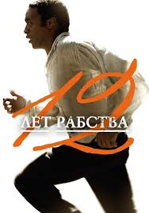

"Секрет (2020)"
- Рейтинг: 6.5/10
- Жанр: Драма, Мелодрама
- Овдовіла Міранда Веллс — працьовита мати трьох дітей, яка зазнає серйозних фінансових труднощів. Міранда управляє рибним рестораном в Новому Орлеані і намагається розібратися з боргами, але грошей не вистачає навіть на такі прості радощі життя, як піца. Міранда зустрічається зі своїм начальником Таком, але ці відносини приносять їй більше стресу, ніж радості. Коли сильний шторм пошкоджує дах в будинку Міранди, у жінки не знаходиться грошей на ремонт. Несподівано доля зводить її з загадковим професором Бреєм Джонсоном. Брей допомагає Міранді з лагодженням даху і стає другом Веллс. Його присутність, підтримка і поради допомагають родині об'єднатися і по-іншому подивитися на життя.
"12 Років Рабства (2013)"
- Рейтинг: 8.1/10
- Жанр: Драма, Історичний, Біографічний
- Біографічна драма розповість історію життя Соломона Нортапа. Чорношкірий чоловік, який з'явився на світ в статусі вільної людини. Це був 1807 рік. На території Нью-Йорка у його батька було фермерське володіння. У подальшому воно перейшло по спадковій лінії й самому Соломону. Тут він зміг отримати гарну освіту і навіть навчився грати на скрипці. Якось раз, Соломону було зроблено цікаву пропозицію. Це була робота скрипаля в Вашингтоні, за рахунок якої чоловік міг отримати солідний гонорар. У результаті, чоловік був відправлений до штату Луїзіана. Там інші закони, а тому темношкірі люди не мали ніяких прав. Будучи міцним фізично, він став ласим шматочком для перспективного власника. Вже незабаром викрадачі отримали за нього хороший гонорар, а Соломон мав змиритися з новим способом життя, але думки про повернення додому ніколи його не покидали.
"Острів проклятих (2010)"

- Рейтинг 9/10
- Жанр: Детектив, Драма, Тріллер
- Одного разу два виконавця судових покарань приїжджають на один віддалений острів, розташований в штаті Массачусетс, щоб з'ясувати обставини зникнення підопічної лікарні для божевільних злочинців. Жінка, вбивця власних дітей, незрозумілим чином зникла із замкненої палати. В процесі розслідування чоловіки розплутують справжній клубок брехні, потрапляють в сильний ураган і стикаються з небезпечним бунтом пацієнтів лікувального закладу, але на цьому все не закінчується...
Контакти
Ви можете з нами звязатись наступним чином:
- Телефон: 380982200888
- Електронна пошта: example@gmail.com
- Адреса: вул.Юлії 27, м.Полтава, Україна